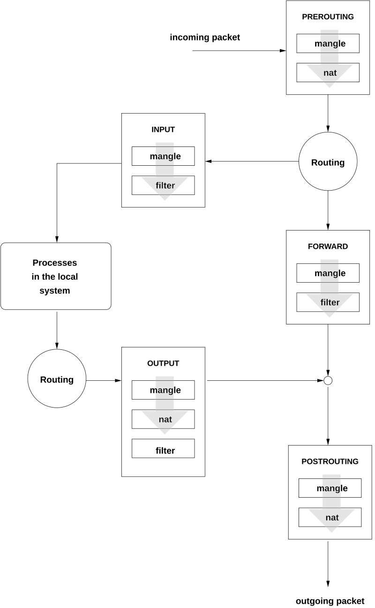

Since everything is ‘In The Cloud’, we don’t have to do things like
plug ethernet cables into humming grey boxes. That stuff still
exists, but it doesn’t exist at the level of abstraction that we’re
working on. Keep that in mind.
Working with AWS will be a little different from the networking that
you’re used to:
VPC
Elastic IP
VPC
Virtual Private Cloud. This is a way for us to abstract a
LAN, essentially.
Lets us create a private, isolated section of the
Cloud to work on.
Once an IP range is specified, we can create subnets and have
instances communicate with each other
Once we set up a Gateway, instances in the VPC will be able to
connect to the outside world.
VPC Vs. Subnet
Inside our VPC, we will also create a subnet.
10.3.45.0/24 VS 10.3.45.0/25
CIDR Review
255
255
255
0
8 bits
8 bits
8 bits
0 bits
8 bits = 1111 1111 = 255 in Decimal.
8 + 8 + 8 = 24 bits are masked off.
CIDR Review
-
-
-
1111 1111
-
-
-
8 bits
How many addresses are available in our VPC?
CIDR Review
255
255
255
1000 0000
8 bits
8 bits
8 bits
1 bit
8 + 8 + 8 + 1 = 25 bits are masked off.
CIDR Review
-
-
-
0111 111
-
-
-
7 bits
What is the decimal value of 0111 1111?
What is the address range inside our subnet of 10.3.45.0/25?
How many addresses available inside our subnet? Outside of it?
Gateway
Where We’re Going
This will allow machines inside our VPC to connect to the Internet
(for example, so that we can run yum update!)
Notice we connect this to the VPC.
Routing Table
This is required to make our Gateway useful. At first:
Destination
Target
10.3.45.0/24
local
Routing Table
Now we will add the following rule:
Destination
Target
10.3.45.0/24
local
0.0.0.0/0
your gateway
In order words, traffic headed for all IP addresses that
aren’t included in 10.3.45.0 - 10.3.45.255 should be routed to
the Gateway.
Router
Create a Router instance. Follow (and review!) the steps from Lab
1.
Remember to create a new security group for the
router. You will return to this security group to modify
it.
Give this router a primary IP address of
10.3.45.10.
Public Vs. Private IP Addresses
10.3.45.10 is a private IP address, it only points to our
router instance inside our private cloud.
Private IP addresses are cheap because they only exist inside our
network. (why do you think everyone’ IP address at home starts with
192.168.0??)
Public IPv4 addresses are in short supply! We are running out of
them!
Public IPv6 not so much, but inertia is strong and nobody wants to
deal with IPv6 😎
Amazon has deep pockets and has a bunch of public IP addresses for
us.
Dynamic Vs. Static IP Addresses
Note that the instances we’ve created so far have been given
public IP addresses that we use to SSH to them.
Public IPs are reset each time the instance reboots.
AWS maintains a pool of public IP addresses that it leases out to
our VMs as they are powered on.
It would be more convenient to have a static public IP address, so
that we don’t have to look up the IP each time we start a new lab.
Elastic IP Address
This is like a more long-term lease of a public IP
address.
It comes from the same pool of public IP addresses that AWS has used
so far.
When you Allocate an Elastic IP, it is removed from
the pool until you are finished with it.
So having an elastic IP will cost you money regardless of
whether your instances are powered on or not.
Router Configuration
Ok, we can SSH into the Router instance because:
The Security Group Inbound rules allow us (0.0.0.0/0) to reach the
router, and
we have the correct private key.
However, when we create the ww instance, we cannot SSH to it.
The Security Group Inbound rules don’t allow us to reach it.
The router instance is allowed to SSH into ww, but
The router doesn’t have our private key on it.
Port Forwarding
We will set up port forwarding so that port 2211 will be open on the
router.
Any traffic sent to port 2211 on router will be forwarded to port 22
on ww.
Time to review iptables
Port Forwarding

iptables Review
The iptables commands are provided for you (check the
screenshot) but you should take a moment to recognize what they are
doing:
We are creating one rule in a PREROUTING CHAIN.
We are removing a blocking rule from the FORWARD table.
We are creating one rule in a POSTROUTING CHAIN. (we’ll cover
masquerade later on)
Don’t forget the Security Group!
Even though routing rules are set up on router instance, nothing
will happen unless you allow inbound traffic on port 2211 in the correct
security group.
Test As You Go!
Check your work
If you encounter an error, fix it before proceeding.
Otherwise you will never know if it was the latest change that broke
everything, or something you ignored 7 steps ago.
Troubleshooting sucks, but backtracking sucks more.